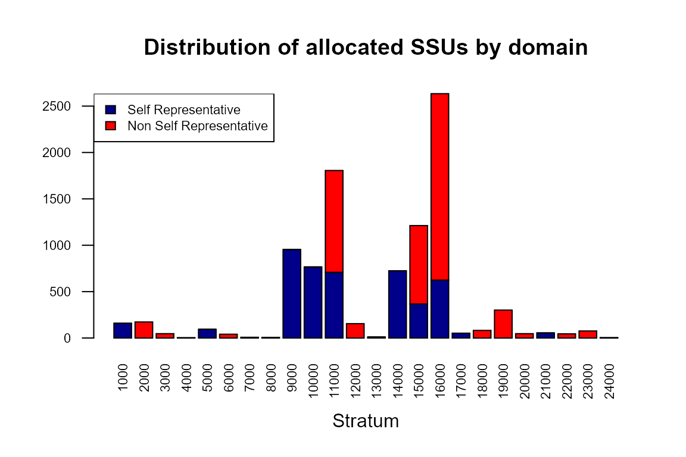

R2BEAT two-stage sampling design workflow starting from a previous survey
2021-01-27
Source: vignettes/R2BEAT_workflow.Rmd
R2BEAT_workflow.RmdThis vignette describes a generalized procedure making use of the methods implemented in the R package developed in the Italian National Institute, namely R2BEAT (“Multistage Sampling Allocation and PSU selection”).
This package allows to determine the optimal allocation of both Primary Stage Units (PSUs) and Secondary Stage Units (SSU), and also to perform a selection of the PSUs such that the final sample of SSU is of the self-weighting type, i.e. the total inclusion probabilities (as resulting from the product between the inclusion probabilities of the PSUs and those of the SSUs) are near equal for all SSUs, or at least those of minimum variability.
This general flow assumes that at least a previous round of the survey, whose sampling design has to be optimized, is available, and is characterized by the following steps:
Use of ReGenesees
Perform externally the definition of the sample design, and possibly of the calibration step, using the R package ReGenesees, and make the design object and the calibrated object available.
load("R2BEAT_ReGenesees.RData") # ReGenesees design object
This is the ‘design’ object:
des
## Stratified 2 - Stage Cluster Sampling Design (with replacement)
## - [49] strata (collapsed)
## - [789, 2236] clusters
##
## Call:
## e.svydesign(sample_2st, ids = ~municipality + id_hh, strata = ~stratum_sub,
## weights = ~d, self.rep.str = ~SR, check.data = TRUE)and this is the calibrated object:
cal
## Calibrated, Stratified 2 - Stage Cluster Sampling Design (with replacement)
## - [49] strata (collapsed)
## - [789, 2236] clusters
##
## Call:
## e.calibrate(design = des, df.population = pop, calmodel = ~clage:sex -
## 1, partition = ~region, calfun = "logit", bounds = c(0.7,
## 1.7), aggregate.stage = 2, force = FALSE)It is advisable to check the presence of lonely strata:
# Control the presence of strata with less than two units ls <- find.lon.strata(des)
## # No lonely PSUs found!In case, provide to collapse and re-do the calibration.
In this example, in the ReGenesees objects there are the following variables:
str(des$variables)
## 'data.frame': 2244 obs. of 17 variables:
## $ region : Factor w/ 3 levels "north","center",..: 1 1 1 1 1 1 1 1 1 1 ...
## $ municipality : num 8 8 8 8 8 8 8 8 8 8 ...
## $ stratum : Factor w/ 24 levels "1000","2000",..: 9 9 9 9 9 9 9 9 9 9 ...
## $ stratum_sub : Factor w/ 81 levels "100001","100002",..: 81 81 81 81 81 81 81 81 81 81 ...
## $ SR : Factor w/ 2 levels "0","1": 2 2 2 2 2 2 2 2 2 2 ...
## $ id_hh : Factor w/ 2236 levels "H100070","H100410",..: 69 43 64 49 367 27 372 373 374 368 ...
## $ sex : Factor w/ 2 levels "1","2": 1 1 2 2 1 2 1 2 1 1 ...
## $ clage : Factor w/ 5 levels "cl0_17","cl18_34",..: 3 1 2 1 5 2 2 2 3 1 ...
## $ income_hh : num 43741 23284 23450 22171 19904 ...
## $ work : num 1 1 1 2 0 1 1 1 1 2 ...
## $ unemployed : num 0 0 0 0 1 0 0 0 0 0 ...
## $ d : num 1238 1238 1238 1238 1238 ...
## $ progr_str : num 1 1 1 1 1 1 1 1 1 1 ...
## $ var.PSU : chr "8.H12425" "8.H10738" "8.H12157" "8.H11208" ...
## $ stratum_sub.collapsed: Factor w/ 49 levels "0.center.clps.1",..: 49 49 49 49 49 49 49 49 49 49 ...
## $ active : Factor w/ 2 levels "0","1": 2 2 2 1 1 2 2 2 2 1 ...
## $ inactive : Factor w/ 2 levels "0","1": 1 1 1 2 1 1 1 1 1 2 ...where there are three potential target variables:
- income_hh (numeric);
- work (factor with values 0, 1, 2);
- unemployed (factor with values 0, 1).
summary(des$variables$income_hh)
## Min. 1st Qu. Median Mean 3rd Qu. Max.
## 0 11463 18516 21661 26763 532331table(des$variables$work)
##
## 0 1 2
## 306 1487 451table(des$variables$unemployed)
##
## 0 1
## 1938 306Great attention must be paid to the nature of the target variables, especially of the ‘factor’ type. In fact, the procedure here illustrated is suitable only when categorical variables are binary with values 0 and 1, supposing we are willing to estimate proportions of ‘1’ in the population. If factor variables are of other nature, then an error message is printed.
Therefore, we have to handle the ‘work’ variable in this way: as values 0, 1 and 2 indicate respectively non labour force, active and inactive people, we can decide to derive from ‘work’ two binary variables, ‘active’ and ‘inactive’:
des<-des.addvars(des,active=factor(ifelse(work==1,1,0))) des<-des.addvars(des,inactive=factor(ifelse(work==2,1,0))) cal<-des.addvars(cal,active=factor(ifelse(work==1,1,0))) cal<-des.addvars(cal,inactive=factor(ifelse(work==2,1,0)))
Now, all the categorical target variables are compliant to the binary constraint:
table(cal$variables$active)
##
## 0 1
## 757 1487table(cal$variables$inactive)
##
## 0 1
## 1793 451table(cal$variables$unemployed)
##
## 0 1
## 1938 306Build ‘strata’, ‘deff’, ‘effst’ and ‘rho’ dataframes
Using ReGenesees objects as input, produce the following dataframes (function ‘input_to_beat.2st_1’):
- the ‘stratif’ dataframe containing:
- STRATUM: identifier of the single stratum
- N: total population in terms of final sampling units
- Mi,Si: mean and standard deviation of target variables (i=1,2,..,P)
- DOMk: domain(s) to which the stratum belongs
- the ‘deff’ (design effect) dataframe, containing the following information:
- STRATUM: the stratum identifier
- DEFFi: the design effect for each target variable i (i=1,2,…,P)
- the ‘effst’ (estimator effect) dataframe, containing the following information:
- STRATUM: the stratum identifier
- EFFSTi: the estimator effect for each target variable i (i=1,2,…,P)
- the ‘rho’ (intraclass coefficient of correlation) dataframe, containing the following information:
- STRATUM: the stratum identifier
- RHO_ARi: the intraclass coefficient of correlation in self-representative PSUs for each target variable i (i=1,2,…,P)
- RHO_NARi: the intraclass coefficient of correlation in non self-representative PSUs for each target variable i (i=1,2,…,P)
Actually, the ‘deff’ dataframe is not used in the following steps, it just remains for documentation purposes.
Here is the way we can produce the above items:
RGdes <- des # ReGenesees design object RGcal <- cal # ReGenesees calibrated object strata_vars <- c("stratum") # variables of stratification target_vars <- c("income_hh", "active", "inactive", "unemployed") # target variables deff_vars <- "stratum" # stratification variables to be used when calculating deff and effst # (n.b: must coincide or be a subset of variables of stratification) id_PSU <- c("municipality") # identification variable of PSUs id_SSU <- c("id_hh") # identification variable of SSUs domain_vars <- c("region") # domain variables inp1 <- input_to_beat.2st_1(RGdes, RGcal, id_PSU, id_SSU, strata_vars, target_vars, deff_vars, domain_vars)
and these are the results:
head(inp1$strata)
## stratum STRATUM N M1 M2 M3 M4 S1 S2 S3 S4 COST CENS DOM1 DOM2
## 1 1000 1000 197451 22266.58 0.6404431 0.2323140 0.12724293 14554.88 0.4798705 0.4223082 0.3332449 1 0 1 center
## 2 10000 10000 106106 27985.40 0.7679285 0.2114187 0.02065276 24367.97 0.4221544 0.4083146 0.1422189 1 0 1 north
## 3 11000 11000 202700 29173.85 0.8029080 0.1730880 0.02400395 39232.92 0.3978024 0.3783234 0.1530613 1 0 1 north
## 4 12000 12000 57420 26937.42 0.7764955 0.2075926 0.01591188 15743.78 0.4165936 0.4055834 0.1251347 1 0 1 north
## 5 13000 13000 103089 26357.25 0.7185271 0.2814729 0.00000000 14592.50 0.4497176 0.4497176 0.0000000 1 0 1 north
## 6 14000 14000 84653 20538.42 0.7518236 0.2131042 0.03507211 14285.81 0.4319547 0.4095007 0.1839621 1 0 1 northhead(inp1$deff)
## stratum STRATUM DEFF1 DEFF2 DEFF3 DEFF4 b_nar
## 1 1000 1000 0.951705 0.991140 1.006731 0.954024 56.50000
## 2 10000 10000 0.856598 1.687606 1.404308 0.819854 26.75000
## 3 11000 11000 1.811807 1.261816 1.346654 1.339464 23.77778
## 4 12000 12000 1.086363 0.502458 0.483954 0.700691 21.00000
## 5 13000 13000 1.000924 1.000924 1.000924 1.000000 95.00000
## 6 14000 14000 0.633543 0.856820 0.845580 0.677276 33.66667head(inp1$effst)
## stratum STRATUM EFFST1 EFFST2 EFFST3 EFFST4
## 1 1000 1000 0.9689494 1 1 0.9420958
## 2 10000 10000 0.9500011 1 1 1.1915475
## 3 11000 11000 0.9544521 1 1 1.0546196
## 4 12000 12000 1.0429461 1 1 0.9732493
## 5 13000 13000 0.9914219 1 1 1.0000000
## 6 14000 14000 0.9829167 1 1 1.0974521head(inp1$rho)
## STRATUM RHO_AR1 RHO_NAR1 RHO_AR2 RHO_NAR2 RHO_AR3 RHO_NAR3 RHO_AR4 RHO_NAR4
## 1 1000 1 -0.000870180180 1 -0.000159639640 1 0.000121279279 1 -0.0008283964
## 2 10000 1 -0.005569009709 1 0.026703145631 1 0.015701281553 1 -0.0069959612
## 3 11000 1 0.035640307317 1 0.011494360976 1 0.015218956098 1 0.0149032976
## 4 12000 1 0.004318150000 1 -0.024877100000 1 -0.025802300000 1 -0.0149654500
## 5 13000 1 0.000009829787 1 0.000009829787 1 0.000009829787 1 0.0000000000
## 6 14000 1 -0.011218071429 1 -0.004383061224 1 -0.004727142857 1 -0.0098793061Build ‘PSU’ and ‘design’ dataframes
Prepare the inputs related to the PSUs (function ‘input_to_strat.2d_2’), that are
- the ‘des_file’ dataframe, containing the following information:
- STRATUM: stratum identifier
- MOS: measure of size of the stratum (in terms of number of contained selection units)
- DELTA: factor that report the average number of SSUs for each selection unit
- MINIMUM: minimum number of units to be selected in each PSU
- the ‘PSU_file’ dataframe, containing the following information:
- stratum identifier
- PSU id
- PSU_MOS: number of final selection units contained in a given PSU
# psu <- read.csv2("psu.csv") # Read the external file containing PSU information head(psu)
## municipality stratum ind hh
## 1 1 12000 1546 609
## 2 2 12000 936 402
## 3 3 12000 367 178
## 4 4 10000 13032 5788
## 5 5 12000 678 281
## 6 6 11000 3193 1194psu_id="municipality" # Identifier of the PSU stratum_var="stratum" # Identifier of the stratum mos_var="ind" # Variable to be used as 'measure of size' delta=1 # Average number of SSUs for each selection unit minimum <- 50 # Minimum number of SSUs to be selected in each PSU inp2 <- input_to_beat.2st_2(psu, psu_id, stratum_var, mos_var, delta, minimum) head(inp2$psu_file)
## PSU_ID STRATUM PSU_MOS
## 1 1 12000 1546
## 2 2 12000 936
## 3 3 12000 367
## 4 4 10000 13032
## 5 5 12000 678
## 6 6 11000 3193head(inp2$des_file)
## STRATUM STRAT_MOS DELTA MINIMUM
## 1 1000 197007 1 50
## 2 2000 261456 1 50
## 3 3000 115813 1 50
## 4 4000 17241 1 50
## 5 5000 101067 1 50
## 6 6000 47218 1 50Check the coherence of populations in strata and PSUs
It may happen that the population in strata (variable ‘N’ in ‘inp1$strata’ dataset) and the one derived by the PSU dataset (variable ‘STRAT_MOS’ in ‘inp2$des_file’ dataset) are not the same.
We can check it by applying the function ‘check_input’ in this way:
newstrata <- check_input(strata=inp1$strata, des=inp2$des_file, strata_var_strata="STRATUM", strata_var_des="STRATUM")
##
## --------------------------------------------------
## Differences between population in strata and PSUs
## --------------------------------------------------
## STRATUM N_in_strata N_in_PSUs relative_difference
## 1 1000 197451 197007 -0.002
## 12 2000 258193 261456 0.012
## 18 3000 116213 115813 -0.003
## 19 4000 17879 17241 -0.037
## 20 5000 102706 101067 -0.016
## 21 6000 47477 47218 -0.005
## 22 7000 30193 30370 0.006
## 23 8000 26580 26518 -0.002
## 24 9000 94610 92833 -0.019
## 2 10000 106106 106030 -0.001
## 3 11000 202700 205900 0.016
## 4 12000 57420 57657 0.004
## 5 13000 103089 102933 -0.002
## 6 14000 84653 83983 -0.008
## 7 15000 187343 186390 -0.005
## 8 16000 108621 108816 0.002
## 9 17000 59483 61117 0.027
## 10 18000 71642 74255 0.035
## 11 19000 145891 140383 -0.039
## 13 20000 62130 60853 -0.021
## 14 21000 51552 55144 0.065
## 15 22000 41688 41791 0.002
## 16 23000 72809 72165 -0.009
## 17 24000 12081 11567 -0.044
##
## --------------------------------------------------
## Population of PSUs has been attributed to strataTogether with the print of the differences between the two populations, the function produces a new version of the strata dataset, where the population has been changed to the one derived by the PSUs dataset.
It is preferable to use this new version:
inp1$strata <- newstrata
Optimal allocation of units in each stratum
Using the function ‘beat.2st’ in ‘R2BEAT’ package execute the optimization of PSU and SSU allocation in strata:
cv <- as.data.frame(list(DOM=c("DOM1","DOM2"), CV1=c(0.03,0.04), CV2=c(0.06,0.08), CV3=c(0.06,0.08), CV4=c(0.06,0.08))) cv
## DOM CV1 CV2 CV3 CV4
## 1 DOM1 0.03 0.06 0.06 0.06
## 2 DOM2 0.04 0.08 0.08 0.08stratif = inp1$strata errors = cv des_file = inp2$des_file psu_file = inp2$psu_file rho = inp1$rho effst = inp1$effst alloc <- beat.2st(stratif, errors, des_file, psu_file, rho, deft_start = NULL, effst, epsilon1 = 5, mmdiff_deft = 1,maxi = 15, epsilon = 10^(-11), minnumstrat = 2, maxiter = 200, maxiter1 = 25)
## iterations PSU_SR PSU NSR PSU Total SSU
## 1 0 0 0 0 6530
## 2 1 40 60 100 9025
## 3 2 23 124 147 9453
## 4 3 23 125 148 9453This is the sensitivity of the solution:
alloc$sensitivity
## Type Dom V1 V2 V3 V4
## 1 DOM1 1 1 0 1 1
## 5 DOM2 1 1 0 3 1649
## 9 DOM2 2 26 1 14 67
## 13 DOM2 3 121 1 12 1i.e., for each domain value and for each variable it is reported the gain in terms of reduction in the sample size if the corresponding precision constraint is reduced of 10%.
These are the expected values of the coefficients of variation:
alloc$expected
## Type Dom V1 V2 V3 V4
## 1 DOM1 1 0.0188 0.0159 0.0465 0.0445
## 5 DOM2 1 0.0230 0.0202 0.0769 0.0800
## 9 DOM2 2 0.0399 0.0305 0.0786 0.0798
## 13 DOM2 3 0.0399 0.0401 0.0796 0.0608Selection of PSUs
Using the function ‘StratSel’ execute the selection of PSU in strata:
set.seed(1234) allocat <- alloc$alloc[-nrow(alloc$alloc),] sample_2st <- StratSel(dataPop= inp2$psu_file, idpsu= ~ PSU_ID, dom= ~ STRATUM, final_pop= ~ PSU_MOS, size= ~ PSU_MOS, PSUsamplestratum= 1, min_sample= minimum, min_sample_index= FALSE, dataAll=allocat, domAll= ~ factor(STRATUM), f_sample= ~ ALLOC, planned_min_sample= NULL, launch= F)
This is the overall sample design:
sample_2st[[2]]
## Domain SRdom nSRdom SRdom+nSRdom SR_PSU_final_sample_unit NSR_PSU_final_sample_unit
## 1 1000 2 0 2 160 0
## 2 2000 0 3 3 0 173
## 3 3000 0 1 1 0 47
## 4 4000 0 1 1 0 4
## 5 5000 2 0 2 94 0
## 6 6000 0 1 1 0 41
## 7 7000 0 1 1 0 8
## 8 8000 0 1 1 0 7
## 9 9000 1 0 1 954 0
## 10 10000 6 0 6 766 0
## 11 11000 15 20 35 708 1098
## 12 12000 0 3 3 0 155
## 13 13000 1 0 1 11 0
## 14 14000 4 0 4 725 0
## 15 15000 8 16 24 367 845
## 16 16000 15 38 53 624 2010
## 17 17000 1 0 1 52 0
## 18 18000 0 2 2 0 82
## 19 19000 0 6 6 0 301
## 20 20000 0 1 1 0 47
## 21 21000 1 0 1 55 0
## 22 22000 0 1 1 0 45
## 23 23000 0 2 2 0 76
## 24 24000 0 1 1 0 5
## 25 Total 56 98 154 4516 4944
## 26 Mean 188 206des <- sample_2st[[2]] des <- des[1:(nrow(des)-1),] strat <- c(as.character(as.numeric(des$Domain[1:(nrow(des)-1)])),"Tot") barplot(t(des[1:(nrow(des)),2:3]), names=strat, col=c("darkblue","red"), las=2, xlab = "Stratum", cex.axis=0.7, cex.names=0.7) legend("topleft", legend = c("Self Representative","Non Self Representative"), fill = c("darkblue", "red")) title("Distribution of allocated PSUs by domain")

barplot(t(des[1:(nrow(des)),5:6]), names=strat, col=c("darkblue","red"), las=2, xlab = "Stratum", cex.axis=0.7, cex.names=0.7) legend("topleft", legend = c("Self Representative","Non Self Representative"), fill = c("darkblue", "red")) title("Distribution of allocated SSUs by domain")

and these are the selected PSUs:
selected_PSU <- sample_2st[[4]] selected_PSU <- selected_PSU[selected_PSU$PSU_final_sample_unit > 0,] write.table(sample_2st[[4]],"Selected_PSUs.csv",sep=";",row.names=F,quote=F) head(selected_PSU)
## Sampled_PSU Pik Size_Stratum STRATUM PSU_ID PSU_MOS PSU_MOS.1 ALLOC threshold final_populationdom sampling_fraction SR SizeSR stratum N_PSU_Stratum PSU_final_sample_unit nSR
## 1 1 1.00000000 146162 1000 330 146162 146162 160 61564.69 197007 0.0008121539 1 146162 10001 1 119 0
## 2 1 1.00000000 50845 1000 309 50845 50845 160 61564.69 197007 0.0008121539 1 0 10002 1 41 0
## 3 1 0.29456416 99727 2000 315 29376 29376 172 76004.65 261456 0.0006578545 0 0 20001 3 66 1
## 7 1 0.21265470 80318 2000 318 17080 17080 172 76004.65 261456 0.0006578545 0 0 20002 4 53 1
## 11 1 0.16948570 81411 2000 314 13798 13798 172 76004.65 261456 0.0006578545 0 0 20003 6 54 1
## 32 1 0.02738898 115813 3000 302 3172 3172 47 123205.32 115813 0.0004058266 0 0 30001 26 47 1Selection of SSUs
Finally, we are able to select the Secondary Sample Units (the individuals) from the already selected PSUs (the municipalities). First, we load the population frame:
load("Frame.RData")
and we proceed to select the sample in this way:
samp <- select_SSU(df=pop, PSU_code="municipality", SSU_code="id_ind", PSU_sampled=selected_PSU[selected_PSU$Sampled_PSU==1,], verbose=FALSE)
To check that the total amount is practically equal to what determined in the allocation step:
nrow(samp)
## [1] 9460sum(allocat$ALLOC)
## [1] 9453and that the sum of weights equalize population size:
nrow(pop)
## [1] 2258507sum(samp$weight)
## [1] 2258507This is the distribution of weights:
par(mfrow=c(1, 2)) boxplot(samp$weight,col="orange") title("Weights distribution (total sample)",cex.main=0.7) boxplot(weight ~ region, data=samp,col="orange") title("Weights distribution by region",cex.main=0.7)
boxplot(weight ~ province, data=samp,col="orange") title("Weights distribution by province",cex.main=0.7) boxplot(weight ~ stratum, data=samp,col="orange") title("Weights distribution by stratum",cex.main=0.7)
It can be seen that the sample is fully self-weighted inside strata, and approximately self-weighted in aggregations of strata, that is the result we wanted to obtain.